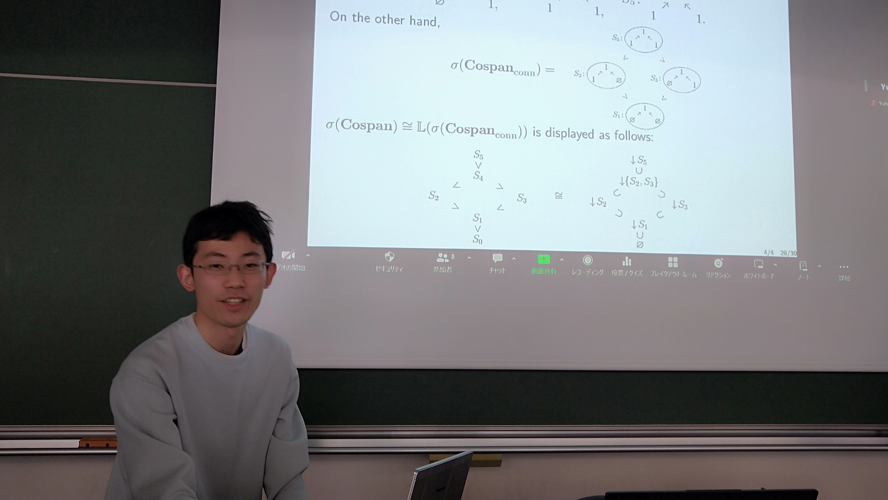
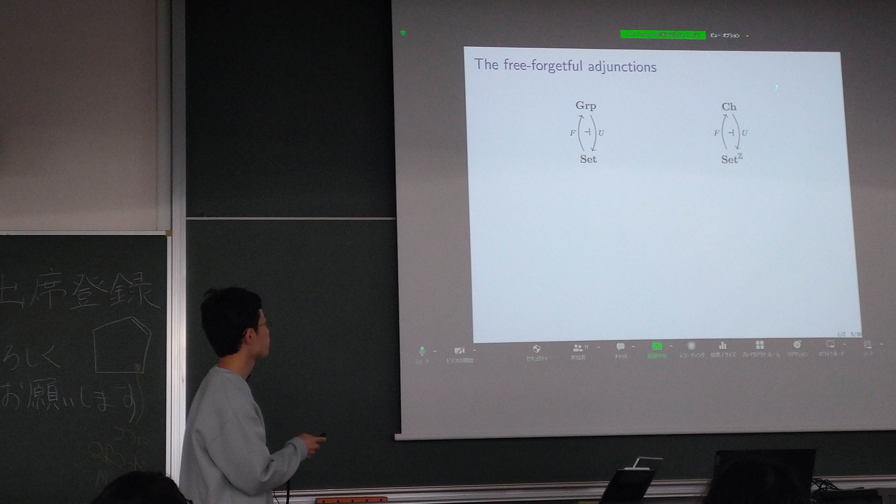

Yuto Kawase
Ph.D. student, JSPS Research Fellow (DC1) from April 2024
Research Institute for Mathematical Sciences (RIMS), Kyoto University, Japan
I'm a menber of RIMS-CS Group.
ykawase(at)kurims.kyoto-u.ac.jp
Recent updates
Research interests
Categorical algebra
Equational theory · Birkhoff varieties · universal algebra · categorical Galois theory · homological algebra
Category theory
Accessible and locally presentable categories · monads and their algebras · enriched categories · double categories

Me answering a question
March 1, 2024 · Tokyo · Taken by Yuki Imamura

Me describing adjunctions
March 1, 2024 · Tokyo · Taken by Yuki Imamura
Friends and colleagues
- Keisuke Hoshino (RIMS)
- Hayato Nasu (Dalhousie University)
- Takahiro Sanada (Fukui Prefectural University)
- Ryuya Hora (ZEN University)
- Kengo Hirata (Chiba University)
- Yuki Maehara (Tokyo Metropolitan University)
- Yuki Imamura (Osaka Metropolitan University)
Outreach
Contributed an article to Sūgaku Seminar, November 2025 (in Japanese).